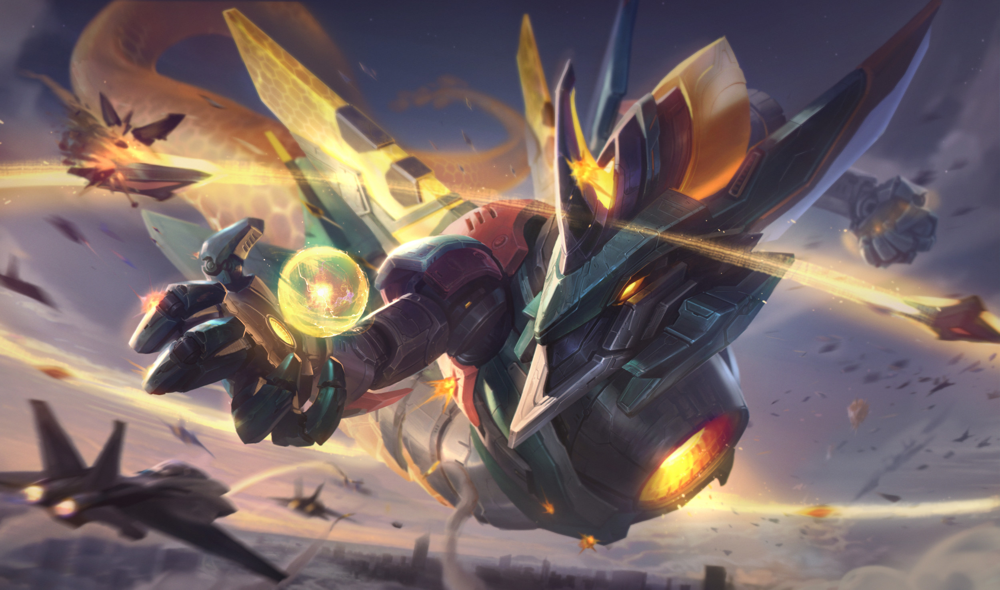

TFT is an auto chess game developes by RIOT games known most famously for League of legends In this game you are given a certain amount of gold each round to buy units to set on a board to fight for you against the other players. While you can be more laxed while playing this game theory crafting and strategy as well as RNG manipulation play a large part in how you fair agaisnt your foes.

Each round all players are given 5 gold with which they can do a couple of things. buy units to put into battle, spend for experience to level up, or reroll the RNG draw of units to choose from. For every increment for 10 gold you hold at the end of each round you generate 1+ unit of gold up to 5 maxing your interest at 50 gold. Gold bonuses are also earned for both Win and Loss streaks. Once you learn to manage your income effectively you will see your success rate sky rocket.
In TFT each unit has several traits associated with it, when a designated amount of these units with matching traits are on your board they activate what are called synergies giving your team specific buffs associated with that synergy.By mixing and matchign these you can create unique and powerful team compisitions.
Once you have godl management mastered and have a solid understanding of synergies the next step in being a competitive TFT battler is placement. The board is set in a hexagonal grid type fashion half being for your units and half being for your opponent. how you place your units on the board can be the difference between winning and losing positioning your unit both so your important damage dealers are protected and your opponents are targeted with priority